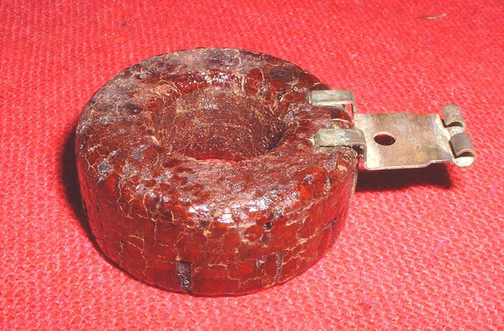
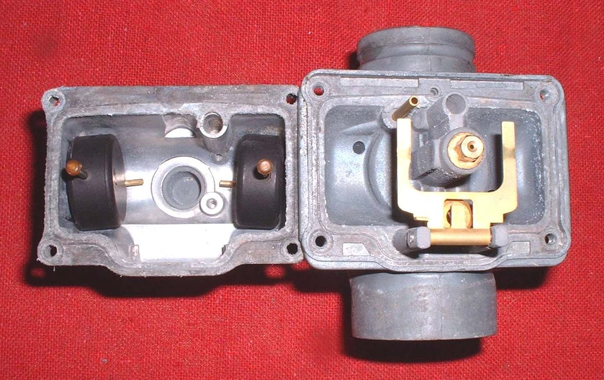
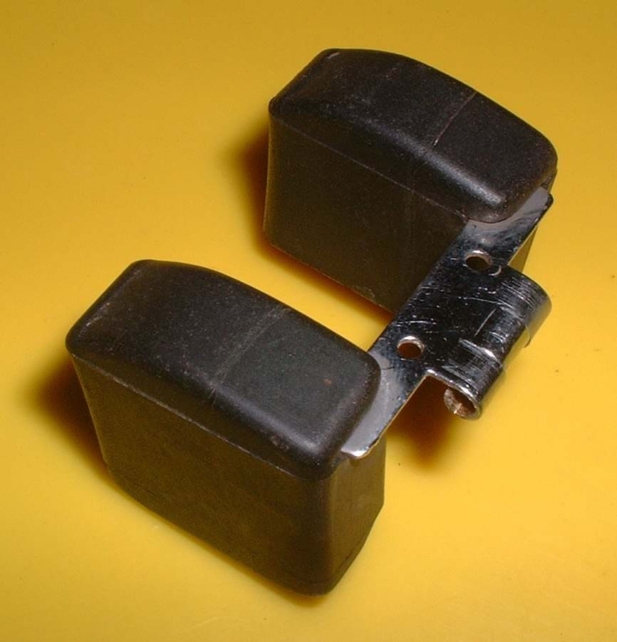

The float rides on the fuel in the bowl and controls the needle valve that lets fuel in. It can be metal, plastic, or both. Old ones were cork. Floats are one piece or two. Two-piece floats help hold the level steady when accelerating, braking and cornering.
What it does
A tang on the float presses on the needle. If the float rises too high the tang shuts the needle. If it drops, the needle opens. Bending a metal tang changes the fuel level. Most plastic floats cannot be adjusted, though some have a metal insert that can.
Signs it is worn or failing
- Overflow or flooding: Fuel pours out of the carburettor overflow pipe.
- Fuel smell or a wet engine after parking: Strong smell of fuel.
- A crushed metal float after the bike stood in freezing weather with water in the fuel. A float that is soaked, cracked or crushed must be replaced.
When to replace it
Replace a float that is dented, cracked, heavy with fuel or has a damaged tang or pivot. Posts that hold the float pin are weak, so use support when driving the pin out.
What to match when buying
- Carburettor make and model, and whether the float is single or double.
- The correct float height in your bike's manual.
- Pin, if it is a part of the kit.
Fitting notes
- Water in the fuel can freeze and crush a metal float. Drain the carburettor and tank before long cold storage.
- Some float pins are serrated at one end. Push the pin out from the serrated end.
- See Measure and set the carburettor float height.